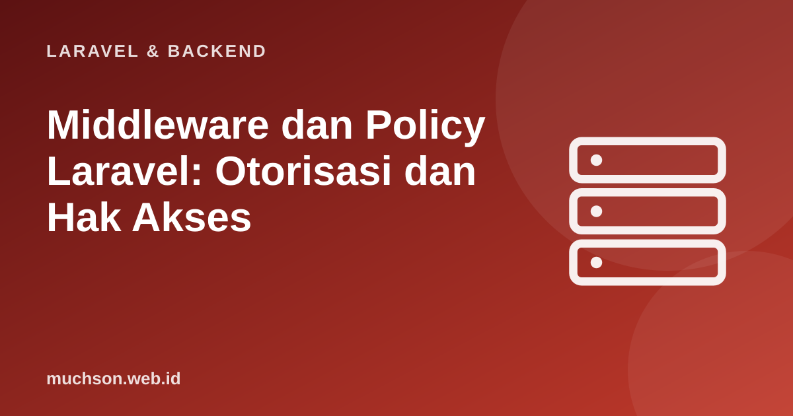

Beranda › Artikel › Laravel & Backend
Laravel & BackendMiddleware dan Policy Laravel: Otorisasi dan Hak Akses
Autentikasi memastikan siapa penggunanya; otorisasi memutuskan apa yang boleh ia lakukan. Kebocoran data paling sering terjadi bukan karena login jebol, melainkan karena pengguna A bisa membuka data pengguna B hanya dengan mengganti angka di URL. Middleware dan policy di Laravel adalah alat untuk menutup celah itu secara sistematis.
Sebaiknya sudah paham: dasar Laravel, autentikasi

Setelah membaca dan mencoba materi ini, Anda mampu:
- menjelaskan middleware sebagai pipa penyaring permintaan
- membuat dan memasang middleware kustom
- menulis policy dan memakainya di controller dan Blade
- membedakan otorisasi berbasis peran dan berbasis kepemilikan
- mengenali dan mencegah IDOR (akses objek tanpa pemeriksaan)
Kode PHP/Laravel di artikel ini mengikuti dokumentasi Laravel (versi 11 dan seterusnya, PHP 8.2 atau lebih baru). Bagian "cara kerja di balik layar" dijalankan sungguhan dengan Python atau JavaScript agar konsepnya dapat dibuktikan.
Middleware: pipa yang dilalui setiap permintaan
// Gagasan inti middleware: rangkaian fungsi, masing-masing memanggil next() atau menghentikan
function jalankan(middleware, penangan, req) {
let i = 0;
const next = () => (i < middleware.length ? middleware[i++](req, next) : penangan(req));
return next();
}
const catat = (req, next) => { console.log(' [log] ' + req.metode + ' ' + req.url); return next(); };
const auth = (req, next) => req.pengguna ? next() : '401 Belum login';
const hanyaAdmin = (req, next) => req.pengguna.peran === 'admin' ? next() : '403 Dilarang';
const penangan = req => '200 Panel admin untuk ' + req.pengguna.nama;
for (const req of [
{ metode: 'GET', url: '/admin', pengguna: null },
{ metode: 'GET', url: '/admin', pengguna: { nama: 'Budi', peran: 'tamu' } },
{ metode: 'GET', url: '/admin', pengguna: { nama: 'Ani', peran: 'admin' } },
]) console.log(jalankan([catat, auth, hanyaAdmin], penangan, req)); [log] GET /admin
401 Belum login
[log] GET /admin
403 Dilarang
[log] GET /admin
200 Panel admin untuk AniMiddleware kustom di Laravel
<?php
// php artisan make:middleware EnsureUserIsAdmin
namespace App\Http\Middleware;
use Closure;
use Illuminate\Http\Request;
use Symfony\Component\HttpFoundation\Response;
class EnsureUserIsAdmin
{
public function handle(Request $request, Closure $next): Response
{
if (! $request->user()?->isAdmin()) {
abort(403, 'Hanya admin yang boleh mengakses halaman ini.');
}
return $next($request);
}
}
// bootstrap/app.php (Laravel 11+): daftarkan alias
->withMiddleware(function (Middleware $middleware) {
$middleware->alias(['admin' => \App\Http\Middleware\EnsureUserIsAdmin::class]);
})
// routes/web.php: pakai
Route::middleware(['auth', 'admin'])->prefix('admin')->group(function () {
Route::get('/', [AdminController::class, 'index']);
});
// middleware dengan parameter: ->middleware('peran:editor,admin') (parameter diterima setelah $next)Otorisasi per objek: Policy
Middleware cocok untuk aturan kasar ("hanya admin masuk ke /admin"). Untuk aturan per objek ("pengguna hanya boleh mengubah pesanan miliknya"), gunakan policy: satu kelas per model yang berisi method untuk tiap aksi.
<?php
// php artisan make:policy PesananPolicy --model=Pesanan
namespace App\Policies;
use App\Models\Pesanan;
use App\Models\User;
class PesananPolicy
{
public function before(User $user, string $aksi): ?bool
{
if ($user->isAdmin()) return true; // admin lolos semua; null = lanjut ke pemeriksaan biasa
return null;
}
public function view(User $user, Pesanan $pesanan): bool
{
return $pesanan->user_id === $user->id;
}
public function update(User $user, Pesanan $pesanan): bool
{
return $pesanan->user_id === $user->id && $pesanan->status === 'baru'; // hanya selama masih baru
}
public function delete(User $user, Pesanan $pesanan): bool
{
return false; // pesanan tak boleh dihapus pengguna biasa
}
}
// Controller
public function update(Request $request, Pesanan $pesanan)
{
$this->authorize('update', $pesanan); // 403 otomatis bila policy menolak
$pesanan->update($request->validated());
return back();
}
// Blade
// @can('update', $pesanan) <a href="...">Ubah</a> @endcan
// Atau di rute: Route::put('/pesanan/{pesanan}', ...)->can('update', 'pesanan');Bahaya IDOR dan cara mengujinya
IDOR (Insecure Direct Object Reference): aplikasi mengambil objek berdasarkan ID dari URL (/pesanan/105) tanpa memeriksa bahwa ID itu milik pengguna yang sedang login. Penyerang cukup mengganti 105 menjadi 106. Ini salah satu kerentanan paling umum, dan peringkat teratas di daftar OWASP (Broken Access Control).
// Peragaan IDOR: tanpa pemeriksaan kepemilikan vs dengan policy
const pesanan = [
{ id: 105, user_id: 1, isi: 'Kopi x2 (milik Ani)' },
{ id: 106, user_id: 2, isi: 'Teh x1 (milik Budi)' },
];
const cari = id => pesanan.find(p => p.id === id);
const rentan = (pengguna, id) => cari(id)?.isi ?? '404'; // TIDAK memeriksa pemilik
const aman = (pengguna, id) => {
const p = cari(id);
if (!p) return '404';
return (p.user_id === pengguna.id || pengguna.peran === 'admin') ? p.isi : '403 Dilarang'; // policy: pemilik atau admin
};
const ani = { id: 1, peran: 'pengguna' };
console.log('rentan, Ani membuka #106 :', rentan(ani, 106), ' <- KEBOCORAN DATA');
console.log('aman, Ani membuka #106 :', aman(ani, 106));
console.log('aman, Ani membuka #105 :', aman(ani, 105));
console.log('aman, admin membuka #106:', aman({ id: 9, peran: 'admin' }, 106));rentan, Ani membuka #106 : Teh x1 (milik Budi) <- KEBOCORAN DATA
aman, Ani membuka #106 : 403 Dilarang
aman, Ani membuka #105 : Kopi x2 (milik Ani)
aman, admin membuka #106: Teh x1 (milik Budi)Peran dan izin (RBAC)
// RBAC: pengguna -> peran -> izin. Pemeriksaan selalu ke IZIN, bukan ke nama peran.
const peranIzin = {
admin: ['produk.lihat', 'produk.ubah', 'produk.hapus', 'pengguna.kelola'],
editor: ['produk.lihat', 'produk.ubah'],
tamu: ['produk.lihat'],
};
const bisa = (pengguna, izin) => pengguna.peran.some(p => peranIzin[p]?.includes(izin));
const ani = { nama: 'Ani', peran: ['editor'] };
const budi = { nama: 'Budi', peran: ['tamu'] };
const citra = { nama: 'Citra', peran: ['editor', 'admin'] }; // beberapa peran digabung
for (const u of [ani, budi, citra])
console.log(u.nama.padEnd(6), ['produk.ubah', 'produk.hapus', 'pengguna.kelola'].map(i => i + '=' + (bisa(u, i) ? 'ya' : 'tidak')).join(' '));Ani produk.ubah=ya produk.hapus=tidak pengguna.kelola=tidak
Budi produk.ubah=tidak produk.hapus=tidak pengguna.kelola=tidak
Citra produk.ubah=ya produk.hapus=ya pengguna.kelola=ya1. Buat middleware yang hanya mengizinkan pengguna ber-peran editor atau admin.
2. Tulis aturan policy: komentar hanya dapat dihapus oleh pembuatnya atau admin.
return $user->id === $komentar->user_id || $user->isAdmin();3. Bagaimana mencegah IDOR dengan query yang dibatasi?
$request->user()->pesanan()->findOrFail($id): hanya mencari di pesanan milik pengguna.4. Apa beda 401 dan 403?
- Middleware adalah pipa penyaring permintaan: auth, throttle, peran.
- Policy mengatur otorisasi per objek; $this->authorize() dan @can memakainya.
- IDOR/Broken Access Control: selalu periksa kepemilikan atau hak, jangan percaya ID dari klien.
- RBAC: periksa izin, bukan nama peran; otorisasi selalu di sisi server.
Tanya jawab
Apa bedanya Gate dan Policy?
Di mana mendaftarkan middleware di Laravel 11+?
Apakah perlu paket peran-izin?
Referensi
- Laravel: Middleware
- Laravel: Authorization
- OWASP Top 10: A01 Broken Access Control
- spatie/laravel-permission